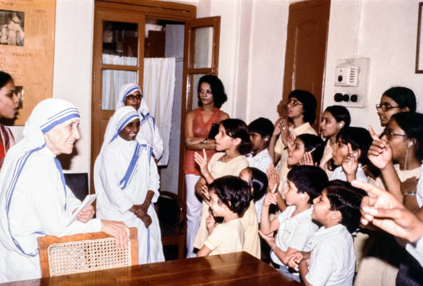
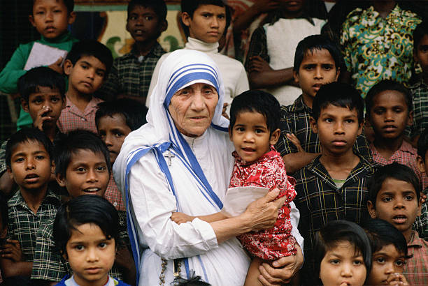
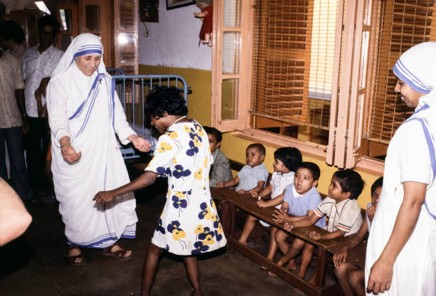
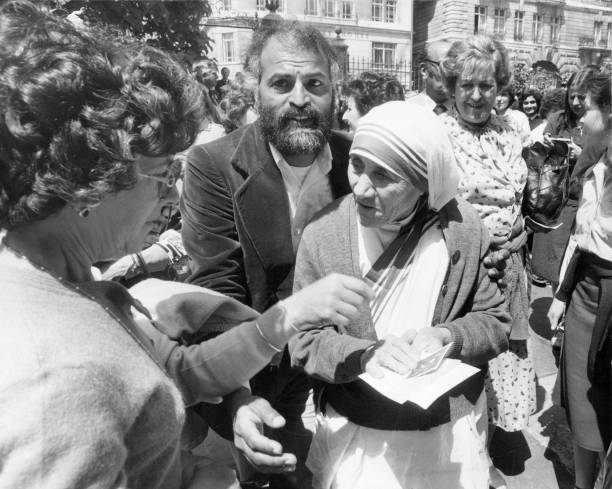
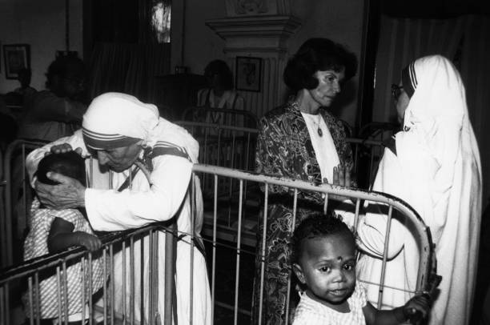
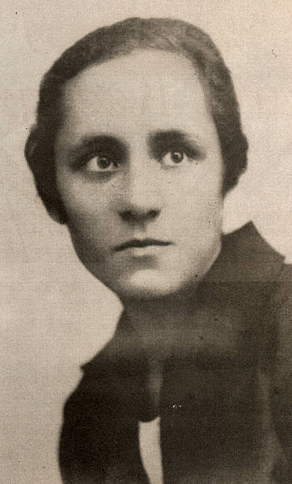

Mother Teresa, born Agnes Gonxha Bojaxhiu, was a Roman Catholic nun, missionary, and founder of the Missionaries of Charity, an organization dedicated to helping the world's poorest. She was known for her tireless work with the poor, sick, and marginalized in Kolkata (then Calcutta), India, and received the Nobel Peace Prize in 1979 for her efforts. She was later canonized as Saint Teresa of Calcutta.
QUICK FACTS
Full Name: Anjezë Gonxhe Bojaxhiu
Born: August 26, 1910
Died: September 5, 1997
Nationality: Albanian-Indian
Known for: Founding Missionaries of Charity
Canonized: September 4, 2016 (as Saint Teresa of Calcutta)
ACHIEVEMENTS
Founded the Missionaries of Charity in 1950 to serve the poorest of the poor.
Received the Nobel Peace Prize in 1979 for her humanitarian work.
Opened over 600 missions in more than 130 countries.
Awarded the Bharat Ratna, India’s highest civilian award, in 1980.
Established homes for the dying, lepers, and orphans worldwide.
Beatified as Blessed Teresa of Calcutta by Pope John Paul II in 2003.
Canonized as Saint Teresa of Calcutta by Pope Francis in 2016.
Inspired countless volunteers and social workers globally.
Advocated for the dignity of the marginalized and voiceless.
Left a lasting legacy of compassion and selfless service.
A FAMOUS QUOTE OF MOTHER TERESA
"Not all of us can do great things. But we can do small things with great love."
PHOTO GALLERY






WATCH THIS VIDEO TO LEARN ABOUT THE LIFE AND WORK OF MOTHER TERESA